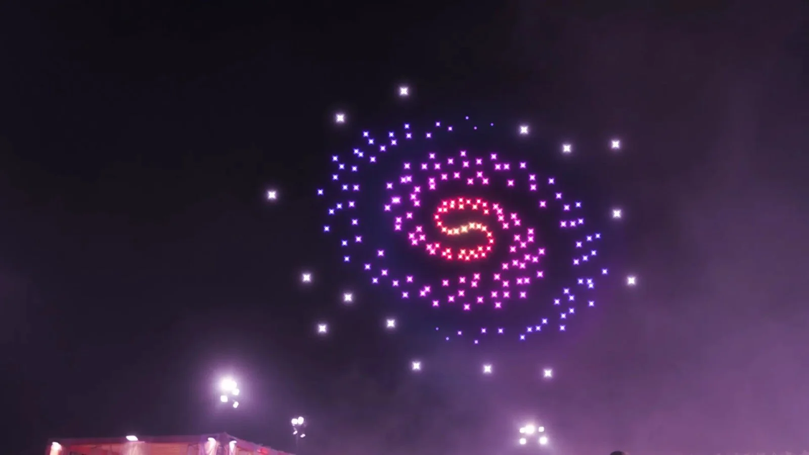

01 / LIVE EXPERIENCESAIRBOTIX TECHNOLOGY · 2023–2026
A canvas
with no ceiling.
Building the creative pipeline behind drone light shows: choreography, procedural assets, team direction, and repeatable delivery.
Explore the project ↗150+SHOWS DELIVERED AT AIRBOTIX
10+DESIGNERS LED